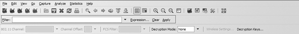

Activitats
Instal·lació del programa Wireshark
L’objectiu d’aquesta activitat és que us prepareu l’entorn per tal de poder començar a fer servir aquest analitzador de protocols.
Heu d’instal·lar el Wireshark.
El programari Wireshark és un analitzador de protocols utilitzat per fer anàlisis i solucionar problemes que puguin aparèixer en xarxes de comunicacions. De fet, el programari permet veure tot el trànsit que passa per la xarxa en mode promiscu, això és a dir, escoltant. A més, el programari permet examinar les dades o els arxius que hagi capturat perquè l’usuari en pugui obtenir tota la informació que vulgui.
Per descarregar el programari, us haureu d’adreçar a la pàgina web oficial (http://www.wireshark.org/) i haureu de fer clic sobre l’enllaç que ens permetrà la descàrrega (http://www.wireshark.org/download.html).
L'analitzador de protocols: posada en marxa
L’objectiu d’aquesta activitat és que comenceu a treballar amb l’analitzador de protocol.
L’analitzador és una eina molt útil per entendre el procés d’encapsulament de la informació. A més, permet fer estadístiques d’ús de la xarxa, etc. L’únic problema és que si la xarxa és commutada (concentrador o hub - commutat o commutador o switch), només podem capturar el trànsit que prové o que va cap al nostre ordinador.
Una targeta Ethernet pot funcionar en dos modes:
- Mode normal. La targeta de xarxa només tracta les trames en què coincideix l’adreça MAC de destinació amb la seva. En aquest mode, s’estalvia molta capacitat de processament de la CPU del nostre host.
- Mode promiscu. La targeta de xarxa tracta totes les trames que detecta en la xarxa, encara que l’adreça MAC de destinació no sigui la seva. En aquest mode es consumeix CPU i RAM, ja que cal guardar les trames que es capturen.
L’analitzador de protocols fa servir el mode promiscu (tot i que es pot indicar que no el facin servir).
Heu de fer una captura de trànsit amb l’analitzador de protocols Wireshark. Cal que treballeu en mode promiscu (per tal que pugueu veure tots els paquets que viatgen per la Xarxa).
Per generar trànsit de paquets, un cop engegada la captura, podeu navegar per Internet i fer algunes consultes.
Un cop la captura feta, consulteu els paquets que s’han intercanviat i mireu el seu contingut.
Filtratge de paquets
L’objectiu d’aquesta activitat és el flitratge de paquets per tal d’optimitzar les captures de tràfic.
Una funció molt útil per poder analitzar amb més fiabilitat tots els paquets capturats és la possibilitat de discriminar-los sobre la base de certes característiques: protocol, adreça d’origen, adreça de destinació, etc. Per a això és necessari generar filtres, a partir del quadre de text que hi ha a continuació de l’etiqueta Filter… Aquí introduirem l’expressió que s’utilitzarà per al filtratge.
- 
- Filtratge de paquets
Wireshark porta un sistema per generar filtres de manera comprensiva, que es pot activar entrant en l’opció Expression. Per aplicar un filtre generat, s’ha de prémer l’opció Apply. En qualsevol moment es pot tornar a visualitzar tot el trànsit capturat, amb l’opció Clear.
Fareu alguns filtres, però primer haureu de generar trànsit. Connecteu-vos a la xarxa i inicieu una sessió de captura amb les opcions per defecte. A continuació, feu les accions següents:
- Obriu el vostre navegador favorit i connecteu-vos a http://www.escoladeltreball.org
- Feu un ping a www.escoladeltreball.org.
- Abans que finalitzi el ping, entreu en algun enllaç d’aquesta pàgina.
- Connecteu via navegador a www.fsf.org
- Realitzeu un ping a www.fsf.org
- Finalitzeu la captura.
Mirareu el trànsit HTTP, el trànsit que genera la vostra màquina i els paquets de resposta ICMP.
Captura i anàlisi de dades I
L’objectiu d’aquesta activitat és la captura i anàlisi de dades que circulen per la xarxa.
Mitjançant l’analitzador, també és possible obtenir les dades que circulen per la xarxa i s’intercanvien entre els diferents equips. Depenent del tipus de protocol, a nivell d’aplicació, el tipus de dades serà diferent.
Seleccioneu una trama de trànsit HTTP, de manera que quedi destacada, i accionareu l’opció del menú Analyze Follow TCP Stream. Aquesta opció mostrarà el contingut de les dades de la trama a la qual pertany el paquet seleccionat.
En seleccionar aquesta opció, es pot veure que s’ha format un filtre automàticament:
(ip.addr eq 192.168.2.102 and ip.addr eq 213.176.161.13) and (tcp.port eq 4147 and tcp.port eq 80)
Aquest filtre mostra tots els paquets que pertanyen a les adreces d’origen i de destinació, que ataquen els mateixos ports als quals fa referència al paquet.
Seleccioneu un paquet relacionat amb el protocol ICMP i mirarem quines dades conté un paquet echo request.
Captura i anàlisi de dades II
L’objectiu d’aquesta activitat és la captura de dades i el cas particular de les contrasenyes.
Feu una connexió FTP a un servidor anònim i mireu de trobar l’usuari i la contrasenya que s’ha utilitzar per a la connexió.
1. Connecteu-vos a ftp://ftp.rediris.es directament via navegador. Si demanés autenticació, utilitzeu com a usuari anonymous i com a contrasenya una adreça de correu electrònic.
2.* Navegueu per l’estructura de directoris. 3.** Finalitzeu la captura.
S’han de buscar paquets que continguin:
- FTP: Request User Nom_usuari.
- FTP: Request PASS contrasenya.
Número de port d'un servei
L’objectiu d’aquesta activitat és entendre millor el paper que hi té el número de port d’un determinat servei.
En TCP/IP, els servidors fan ús dels números de port per tal d’identificar els processos associats als diferents serveis que ofereixen. Així, per exemple, un mateix servidor pot estar oferint diferents serveis sobre TCP (HTTP, FTP, etc.), de manera que és el número de port el que permet identificar el servei concret al qual va dirigit cadascuna de les peticions TCP dels clients (recordeu que el número de port predeterminat per al servei HTTP és el 80, mentre que per al servei FTP és el 21).
La major part del programari client està dissenyat per utilitzar el número de port predeterminat quan es produeix la connexió a un servei. Els navegadors web, per exemple, tracten de trobar el servei HTTP al port 80 del servidor a menys que s’especifiqui el contrari. Tot i això, és possible configurar un servei perquè s’executi en un altre port, i també configurar un client perquè busqui el servei en el nou port. Així, per exemple, per demanar a un navegador web que cerqui un servei HTTP en un port diferent del 80, n’hi ha prou d’afegir a l’URL del servidor el símbol dels dos punts (:) i el número de port. D’aquesta manera, podem visitar el lloc web d’Amazon fent http://www.amazon.com o, equivalentment, http://www.amazon.com:80. Si, per contra, aquest servei HTTP s’oferís en el port 8080, caldria especificar l’adreça http://www.amazon.com:8080.
En aquesta activitat es demana desenvolupar un exemple de com configurar un número de port diferent per a un servei HTTP fent ús del servidor web Apache. Com a punt de partida de l’activitat, suposarem que disposem d’un PC amb un servidor Apache instal·lat i que es troba “escoltant” en el port 80. En concret, suposarem que ens hem instal·lat sobre Linux el paquet XAMPP. Aquest paquet conté, entre d’altres, un servidor web Apache, un servidor de bases de dades MySQL i el motor del llenguatge PhP.